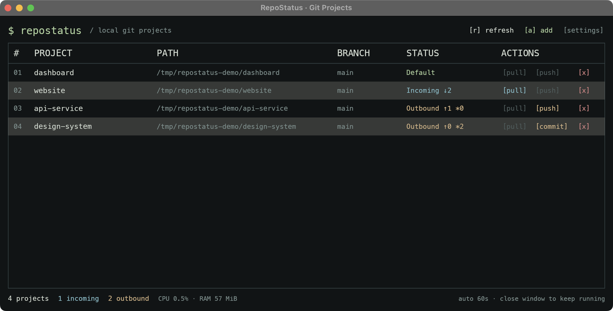
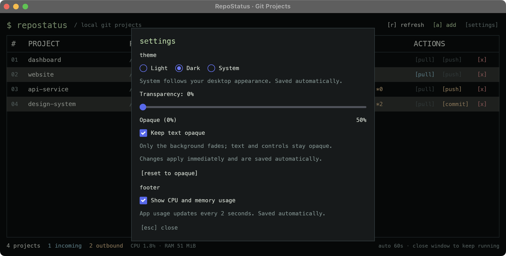

Many repos. One view.
Branches, incoming commits, outgoing commits, and local changes. See what needs attention without opening every folder.
Less switching folders. More shipping.
One native dashboard for the repositories you work on.

↓ incoming commits ↑ outgoing commits * changed files
01 / FEATURES
All the signal you need, in a compact interface that feels right at home beside your terminal.
[ explore the workflow ↗ ]Branches, incoming commits, outgoing commits, and local changes. See what needs attention without opening every folder.
Fetch on startup, every 60 seconds, or on demand. On macOS and Windows, keep it running in your menu bar or system tray.
Pull with fast-forward only, commit all changed files with your message, then push separately. Every Git action is explicit.
Keyboard shortcuts, light and dark themes, persistent preferences, and optional CPU and memory stats.
APPEARANCE / SETTINGS
Choose Light, Dark, or System appearance. Adjust window transparency on macOS and Windows, and keep resource stats close at hand.
[ appearance settings ↗ ]
02 / GET STARTED
Build and run from source. Bring Rust 1.88+, Git, and your existing Git credentials.
[ platform requirements ↗ ]git clone https://github.com/NucleusBeast/repostatus.git
cd repostatus
cargo run --release --lockedSource available · MIT licensed · No account required